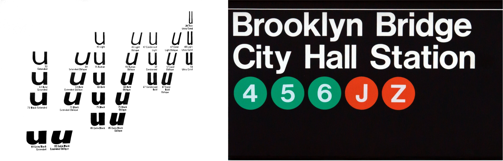

The International Typographic Style (the Style) is a design movement often referred to as the Swiss Style, having developed in 1950s Switzerland before international attention. The movement viewed designers as “communicators, not artists” and thus, their work is akin to “industrial production” (Bradley, 2013) to be understood and utilised by its audience. It emphasised the modernist principle: “form follows function” (Sullivan, 1896) and designers sought to ground their work in rational universal principles achieved through a systematic, mathematical approach. The exaggeration of information and opinions which deviated into propaganda was rejected by the Styles’ pioneers,who argued objectivity was key to a successful design outcome (Meggs, 1983). This methodical rationale influenced a series of distinct visual characteristics which underpin many designs created during the movement’s peak.
Typography was a fundamental element utilised by the pioneers of the International Typographic Style to communicate information to its intended audience. Typography is the art of arranging letter forms, typically styled in a particular typeface design (Carton, 2020). In 1967, Typographie: A Manual of Design was published by Swiss designer Emil Ruder, an acclaimed instructor of typography at the Basel School of Design. In this manual, Ruder outlined the view held by many of his peers on the role of typography in design. He proposed that typefaces should not be chosen based on their aesthetic value. Rather, type served only the purpose of a tool to the designer: “type has one plain duty... to convey information in writing” (Ruder, 1967). The popularity of sans-serif typefaces during this era is evidence that Ruder’s pragmatic perspective was shared by many modernist designers. Based on the “skeletons and structures of previous serif text”, sans-serif typefaces lack decorative features like swashes and tails which adorned traditional type such as Gothic script (Bi'lak, 2019). Designers gravitated towards text stripped of its embellishments which reduced distractions, allowing important information to be appropriately digested by the audience as intended (Budrick, 2020).
“neutralism was a word that we loved. it shouldn’t have a meaning in itself. the meaning is in the content of the text, not in the typeface. and that’s why we loved helvetica very much.”- Wim Crouwel
Two of the most significant sans-serif typefaces to emerge during this time were Univers and Helvetica. The typeface Univers was released in 1957. Designed by Swiss typeface designer, Adrian Frutiger, the sans-serif family is based on the 1896 Grotesque sans-serif typeface: Akzidenz-Grotesk. Upon its release, Univers was a significant success in the field of typography as it was one of the first typefaces to form a family of consistent designs (Osterer & Stamm, 2009). However, by far the most iconic typeface to emerge from this period was Helvetica. First released in 1957, Helvetica is the product of a collaboration between Eduard Hoffman and Max Miedinger (Meggs & Purvis, 2006). As Massimo Vignelli describes in the 2007 documentary Helvetica (2007), Hoffmann and Miedinger created a typeface “generated from a desire to have better legibility” (Vignelli, 2007). Its lack of serif embellishments and diagonal strokes; uniform width in letter form and tight spacing between characters created a typeface that was both easy to read and neutral. In doing so, Helvetica accomplished the International Styles’ belief that form should follow function in design. The typeface rocketed in popularity because it fulfilled the need for a “corporate vanilla” typeface desired during the “Golden Age of Advertising” (Lupton, 2021). Helvetica allowed designers to create branding that was devoid of bias which could distract or deter the audience from the message a company like Lufthansa or BMW wished to promote. The typeface was used by the Italian designer, Massimo Vignelli, in his iconic visual design for the New York City Subway System (Martin, 2016). Its use on official signage and documents emphasises its functionality as a clear, readable typeface that can be understood efficiently in busy public spaces. The effect of typefaces like Helvetica which emerged from the International Typographic Styles highlight the influence typography has; allowing a designer to communicate objectively with the audience through clear, informative work.
Grid systems were a fundamental tool utilised by the pioneers of the International Typographic Style to create designs grounded in mathematical rationale – so much so, that the movement is often referred to as the Swiss Grid Style(Gosling, 2020). The grid is a visual framework comprised of a series of vertical and horizontal lines. These lines create columns and rows which contain and organise visual elements (Terror, 2009). Josef Müller-Brockmann, a Swiss designer closely associated with the International Style, was a master and advocate of grid systems. In his 1981 guide: Grid Systems, Müller-Brockmann explains the importance of the grid to a designer as a “controlling system... to give the surface or space a rational organisation” (Müller-Brockmann, 1981). The designer reflects the attitude held by his contemporaries within the movement, who argued that design should be approached like problem solving; employing grid systems as a tool to achieve a methodical outcome (Meggs & Purvis, 2006). Thus, a practitioner can organise a composition of elements that balance one another by utilising the rationale a mathematically plotted, “emotionally sterile grid” (Novin, 2012) provides. Designers often created layouts which were organised asymmetrically on an underlying grid to create a sense of harmony between visual elements and negative space (Bradley, 2013).
“Beethoven” (1955) is one of the most celebrated posters designed by Müller-Brockmann as a part of his Tonhalle or series of concert advertisements. The designer was interested by the relationship between maths and music; generating a mathematical process in which a series of arcs are constructed by doubling the diameter of the previous (Whitehead, 2017). Each arc varies in weight and length, arranged onto a grid foundation divided into complete circumferences. Müller-Brockmann expertly employs this circular grid to asymmetrically position each arced segment at different column points. His organisation creates the impression of a circle broken apart and dispersed like tectonic plates; now a series of mismatched wheel segments orbiting on different lines of latitude. His use of grid has therefore enabled the designer to generate the illusion of motion from a static piece, reflecting the “intensity” of Beethoven’s music (Whitehead, 2017)
The pioneers of the International Style believed that a designer’s role to society was to act as an “objective conduit”(Meggs & Purvis, 2006), facilitating the deliverance of information to the audience. Outcomes which fabricated propagandised expression were disapproved of because their exaggerated, distortion of information was considered socially regressive. Practitioners were encouraged to produce honest, unbiased design which allowed them to focus on enhancing its ability to communicate. The use of photography as an element was one method in which the Style’s designers were able to ensure they remained a “reliable transmitter” (Novin, 2012). Where an artist’s handcrafted illustration threatened to obscure the honest depiction of an event with prejudice; a lens-based medium like photography could be guaranteed to capture an accurate, unfiltered image of a product or figure. Armin Hofmann, a Swiss graphic designer and pioneer of the Swiss Style, was well known for his expert inclusion of photography (Zettl, 2020); evident in his design of the poster “Gisele” (1959). The black and white poster includes a faceless photograph of a ballerina captured in motion; her pirouette creating a blurred effect which intensifies the kinetic, dynamic energy of the image. The photograph runs parallel with the poster title in Helvetica, positioned vertically to reflect the elegant length of the image. The bold, static typeface is used expertly in glaring contrast to the energy of the anonymous figure (Meggs & Purvis, 2006). This enables Hofmann to appeal to an audience by suggesting that the performance advertised will be an entertaining affair without having to include subjective elements like reviews.
The pioneers of the International Style also utilised simple, minimalist shapes as a technique to create evocative imagery remaining objective. Rudolph DeHarak’s series of over 350 book jackets created for McGraw-Hill Publishers during the 1960s showcases the designer’s ability to utilise simple, geometric forms to create exciting and purposeful imagery (Meggs & Purvis, 2006). He employs the use of planes in his design for the publisher’s edition of “Psychology and Personality” (1960). Several varying rectangle lines spaced equally and rendered in a limited, vibrant colour palette are organised to create the silhouette of two individuals; merging where their forms coincide. DeHarak effectively uses this overlaying of the elements to reflect the philosophical nature of the book it is promoting, fulfilling its purpose as a functional and objective work of art.
It is evident that techniques like typography, grid structures and imagery were all expertly utilised by iconic pioneers of the International Typographic Style like Armin Hofmann and Josef Müller-Brockmann to create designs grounded in logical thought. Their work epitomises the movement’s principles to produce work which prioritised communicating with the intended audience; allowing this purpose to inform the aesthetic outcome created. I found this desire to design with readability and the overall user experience constantly being considered, to be incredibly relevant to the world of Interaction Design today. Techniques like grid structures to create visual hierarchy, utilising legible typefaces and including interesting imagery are fundamental elements required to generate successful user experiences. I have included examples of my own work inspired by the pioneers I have discussed; experimenting with their methods and techniques to improve my own projects.
Bi'lak, P., 2019. Typoteque: A Brief History of Sans-Serif typefaces. [Online] Available at: https://www.typotheque.com/articles/a_brief_history_of_sans_serif_typefaces [Accessed December 2021].
Bradley, S., 2013. Swiss (International) Style of Design: The Guiding Principles That Influence Flat Design. [Online] Available at: https://vanseodesign.com/web-design/swiss-design/ [Accessed 15 December 2021].
Bradley, S., 2013. Swiss Style: The Guiding Principles That Influence Flat Design. [Online] Available at: https://vanseodesign.com/web-design/swiss-design/ [Accessed 2021].
Budrick, C., 2020. Print Mag, Swiss Style. [Online] Available at: https://www.printmag.com/featured/swiss-style-principles-typefaces-designers/ [Accessed 15 December 2021].
Budrick, C., 2020. Print Magazine. [Online] Available at: https://www.printmag.com/featured/swiss-style-principles-typefaces-designers/ [Accessed 2021].
Carton, A., 2020. Design Hill. [Online] Available at: https://www.designhill.com/design-blog/what-is-typography-why-is-it-important-for-graphic-designers/ [Accessed 29 November 2021].
DeHarak, R., 1960. "Psychology and Personality". [Art] (McGraw-Hill Publisher).
Gosling, E., 2020. People of Print: The Swiss Grid. [Online] Available at: https://www.peopleofprint.com/exhibition/the-swiss-grid/ [Accessed 12 December 2021].
Helvetica. 2007. [Film] Directed by Gary Hustwit. United States of America: Swiss Dots; Veer.
Helvetica. 2007. [Film] Directed by Gary Hustwit. United States of America: Swiss Dots; Veer.
Hoffmann, A., 1959. Gisele. [Art].
Keung, L., 2021. What is Swiss Design. [Online] Available at: https://design.tutsplus.com/articles/what-is-swiss-design-and-why-you-should-know-its-history--cms-38463 [Accessed 10 December 2021].
Lupton, E., 2021. My Modern Met: "How Helvetica became the Little Black Dress of Typography". [Online] Available at: https://mymodernmet.com/helvetica-typeface/ [Accessed 2 December 2021].
Lupton, E., 2021. My Modern Met: How Helvetica became the "Little Black Dress" of Typography. [Online] Available at: https://mymodernmet.com/helvetica-typeface/ [Accessed 10 December 2021].
Müller-Brockmann, J., 1955. Beethoven. [Art].
Müller-Brockmann, J., 1981. Grid Systems in Graphic Design: A Visual Communication Manual for Graphic Designers, Typographers and Three Dimensional Designers. 9th Edition ed. s.l.:Verlag Niggli.
Martin, S., 2016. How Graphic Design Legend Massimo Vignelli Cracked the NYC Subway System. [Online] Available at: https://www.ceros.com/inspire/originals/massimo-vignelli-nyc-subway/ [Accessed 12 December 2021].
Meggs, P. B., 1983. Meggs History of Graphic Design. 4th Edition ed. New Jersey: John Wiley & Sons.
Meggs, P. B. & Purvis, A. W., 2006. Meggs' History of Graphic Design. 4th Edition ed. New Jersey: John Wiley & Sons, Inc..
Novin, G., 2012. A History of Graphic Design. s.l.:s.n.
Osterer, H. & Stamm, P., 2009. Adrian Fruitger - Typefaces: Complete Works. Third ed. Basel: Birkhauser.
Ruder, E., 1967. Typographie: A Manual of Design. s.l.:s.n.
Sullivan, L., 1896. The Tall Office Building Artistically Considered. Lipincott Monthly Magazine, Volume 339, pp. 403-409.
Terror, D., 2009. Smashing Magazine: Lessons from Swiss Style Graphic Design. [Online] Available at: https://www.smashingmagazine.com/2009/07/lessons-from-swiss-style-graphic-design/ [Accessed 15 December 2021].
Vignelli, M., 2007. Helvetica [Interview] (29 April 2007).
Whitehead, J., 2017. Medium: Beethoven by Josef Müller-Brockmann. [Online] Available at: https://medium.com/fgd1-the-archive/beethoven-poster-by-josef-muller-brockmann-ce06940edf74 [Accessed 14 December 2021].
Zettl, L., 2020. Armin Hofmann—Reduction. Ethics. Didactics.. [Online] [Accessed 9 December 2021].